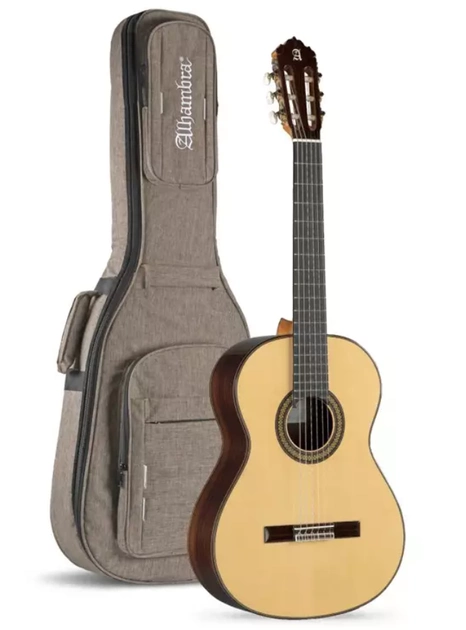

Класична
акустична шестиструнна гітара конструкції Антоніо Торреса (XIX століття).
акустична шестиструнна гітара конструкції Антоніо Торреса (XIX століття).
Конструктивною особливістю таких гітар є наявність металевого стрижня (анкера) всередині грифа для регулювання висоти струн. Під розеткою знаходиться пластикова накладка (панцир) для захисту корпуса (кузова) гітари від можливого дряпання медіатором, який часто використовують при грі на подібних гітарах. Струни встановлюють металеві. Характеризується більш дзвінким тембром.
це еволюція класичної, напівакустичної арктопної гітари. Цей компактний інструмент володіє сучасною електронною технологією, яка передбачає велику універсальність і зручніші для гри функції в процесі запису або виступу. VGA-3D-SB також оснащена вдосконаленою технологією моделювання VOX, що відкриває доступ до ряду тонів, які ви й уявити не могли. Система цифрового моделювання AREOS-D дає гравцеві повний контроль над 18 акустичними й електричними модельованими звуками. Вона використовує кілька елементів для отримання неймовірної якості звучання: магнітний звукознімач для автентичних моделей електрогітар; п'єзозвукознімач для насичених тонів традиційних інструментів; потужний процесор DSP для модельованих звуків; знайомі регулятори гучності, тону та перемикач, а також Control Module, що забезпечує миттєвий доступ до широкого розмаїття параметрів. Компанія VOX надає новий потужний інструмент для виступів і запису креативних музикантів. Оснащена п’єзозвукознімачем бриджова система типу Tune-O-Matic сприяє яскравим звукам акустичних інструментів із блискучою чистотою та широким діапазоном гармонік. Хамбакер VOX XLM створює автентичні звуки електричних інструментів. Ця потужна комбінація поміщає універсальну звукову палітру у ваші руки.
електричний музичний інструмент, різновид гітари з електричними звукознімачами, що перетворюють коливання металевих струн на коливання електричного струму.